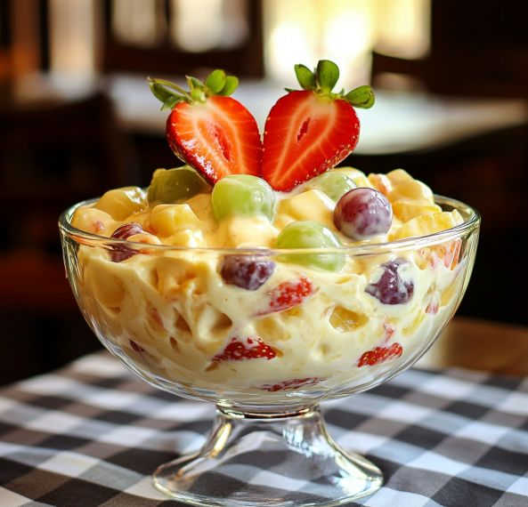

Clique aqui para abrir a imagem
Serve: 5 a 6 pessoas
Lave bem todas as frutas.
Corte em cubinhos médios (nem muito grandes, nem muito pequenos).
Coloque tudo em uma tigela grande.
Acrescente o suco de laranja e misture delicadamente.
No liquidificador, bata o leite condensado, o creme de leite e o suco de maracujá por cerca de 1 minuto.
O creme vai ficar levemente consistente e cremoso.
Despeje o creme sobre as frutas e misture com cuidado.
Leve à geladeira por pelo menos 1 hora antes de servir.